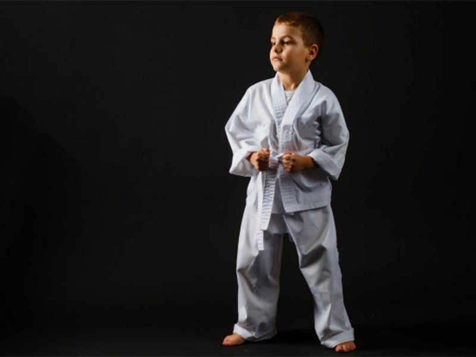
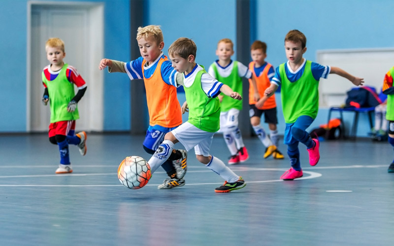

O judô une técnicas do jiu-jitsu a outras artes orientais. A prática possui regras claras e proibições rígidas, passíveis de expulsão do atleta do tatame, tais como golpes no rosto e movimentos que possam lesionar o pescoço e as vértebras do adversário. Por isso, é importante tirar da mente que se trata de uma atividade violenta. Segundo a UNESCO, ele é um dos melhores esportes para serem praticados durante a infância (entre 4 e 14 anos), pois une jogo e diversão. Por isso, deve ser iniciado o quanto antes. Além disso, o judô infantil traz inúmeros benefícios para as crianças.

A possibilidade de aprender a tocar um instrumento durante a infância traz muitos benefícios, pois um dos melhores recursos existentes para desenvolver a criatividade e as habilidades cognitivas da criança. O amor pelos instrumentos musicais também é uma atividade benéfica para as crianças, estimulando a responsabilidade, o trabalho em equipe e o companheirismo, entre outros fatores.

O futsal conta com mais de 11 milhões de praticantes — superando o futebol, que é o esporte mais querido pelos brasileiros. Esse fator pode ser explicado pela maior facilidade ao se jogar em quadras menores e cobertas. Além disso, o número menor de jogadores necessários contribui para que existam mais jogos e campeonatos infantis nessa modalidade.